RAICAM aims to train a cohort of 10 PhD students to work on the next
generation of mobile robots for inspection and maintenance of industrial
facilities. RAICAM will develop a multi-domain, multi-agent robotic
sample retrieval system that will be able to obtain surface swabbing
samples of critical infrastructure buildings for chemical or biological
analysis.
This is an exciting opportunity to do a PhD in Robotics and AI on an
important topic in a well-funded multi-disciplinary international
training network. We are looking for 10 excellent students to work
together as a multi-disciplinary cohort across 10 universities in
Europe. The partners have prepared an extensive training programme for
the students. Training will be delivered by all partners, so there is
ample opportunity to travel to partner sites, discuss interesting
research with like-minded peers, and boost your career by creating your
international network. There are also extensive secondment opportunities
with our wide range of industry partners. If you are interested in doing
your PhD with RAICAM, please get in touch.
RAICAM Training will follow the illustrated model bellow:
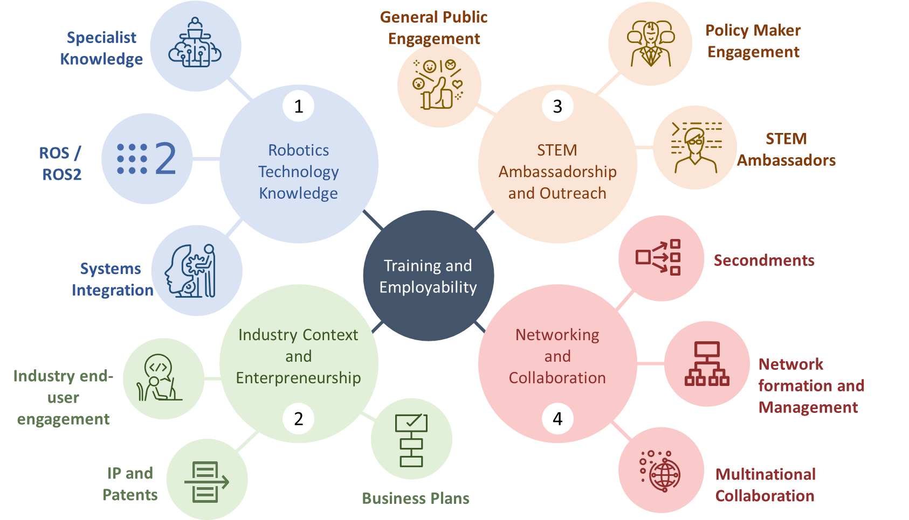
Consortium
Consortium
Job Position Offers
Eligibility Criteria
At the recruitment date (between January and September 2023), be in the first four years of your
research careers and have not been awarded a doctoral degree.
Not have resided or carried out your main activity (work, studies, etc.) in the country of the
recruiting institution for more than 12 months in the 3 years immediately prior to the recruitment date
(between January and September 2023).
University curricula.
Skills and academic background matching with the research project, and academic records (including
transcripts) at masters level or equivalent degree level.
Creative and innovation potential, ability to think out of the box.
Motivation of the candidate for inter-disciplinary research.
As an equal opportunity employer we welcome applicants from all sections of the community regardless of gender, ethnicity, disability, sexual orientation, and transgender status. All appointments are made on merit.
The ESR will be involved in the design and development of a multi-legged
modular robotic platform carried out in the Computational Vision and Robotics Laboratory (CVRL) of the
Foundation for Research and Technology – Hellas. The envisaged platform will autonomously transform into
different legged robot morphologies, namely bipedal, quadrupedal, and hexapedal configurations.
Additionally, it will be equipped with suction cups on the legs to cater for vertical climbing on any
surface. To effectively unleash the full the potential of the robot, based on prior research developed
within the CVRL namely, state-of-the-art RGB-D simultaneous localization and mapping, Extended Kalman Filter
(EKF) state estimation, Model Predictive Control (MPC) motion planning and real-time gait control
technologies, the ESR will investigate all-terrain traversing and climbing, multi-agent exploration on
uneven surfaces and in GPS-denied environments, caves, and mines in order to facilitate sampling acquisition
and retrieval tasks.
Host: Foundation for Research and Technology – Hellas (FORTH), Greece
FORTH (The Foundation for Research and Technology – Hellas) is the largest research centre in Greece, under
the supervision of the General Secretariat for Research and Innovation. The Institute of Computer Science
(ICS, http://www.ics.forth.gr) of FORTH, established in 1983, conducts basic and applied research, develops
applications and products, provides services, and plays a leading role in Greece and internationally, in the
field of ICT. According to the European research rankings (CORDIS data), FORTH has been consistently ranked
(2007–present) in the top 100 research and academic institutions in the EU.
The Computational Vision and Robotics Laboratory (CVRL) was established in 1985. Currently it constitutes
one of the major RTD facilities of ICS-FORTH and employs more than 35 highly skilled and experienced
researchers, engineers and computer scientists. The research and development efforts of CVRL focus on the
areas of computer vision and autonomous mobile robots that perceive their environment and exhibit
intelligent behaviors. Efforts at CVRL are balanced between basic and applied research, resulting in the
development of robust systems for various application domains.
CVRL has a modern research infrastructure (including mobile robots, manipulators, drones, a variety of
vision systems and active sensors, tracking systems, etc), which facilitates experimentation and the
demonstration of research results. In addition, a number of state-of-the-art robotic systems have been
designed and constructed in CVRL, including “Persephone” (robotic tour-guide for the Alistratis cave in
Serres, Greece), Octopus-like robots capable of mimicking the octopus sea-creature, snake-like robots that
can move in harsh environments, and many more. CVRL has established collaborations and partnerships with
universities, research institutions and industry in Europe and the United States. It has an impressive
record of participation in funded projects and has acted as coordinating partner in projects and thematic
networks at a national and European level.
Supervisor(s): Prof Panos Trahanias, Dr Stylianos Piperakis
In a sample retrieval scenario, we aim to have a mobile robot capable of
dynamically, yet sensitively extracting and collecting pieces of materials from different target locations.
The envisioned system should be able to perform forceful and elaborate tasks such as push, pull, puncture,
scoop and even drill pieces attached to a surface within an unstructured environment in a safe yet efficient
manner. This requires a bimanual setup capable of exploring both manipulation and fixture setups as well as
coordinated and cooperative manipulation while ensuring the stability of the workpiece, robustness, and
real-time reactiveness.
The sequence of physical interactions with the environment, in turn, calls for efficient bimanual reactive
planners that tightly interact with the control layers. Such planners should also consider whole-body
configurations and motions to intelligently use object-to-robot contacts, as well as robot-to-environment
and object-to-environment contacts, to keep the robot and the workpiece stable under forceful operations
such as scooping and drilling.
Furthermore, the robot needs to explore the usage of different hand tools, which in turn requires efficient
planning of different grasps and arm motions that should be coordinated with the predicted motions,
obstacles, and interaction forces during operation.
This provides the task-planning expertise to the robotic system, yet the robot should be able to learn
elaborate aspects of the interaction, i.e., low-level skills, which are intrinsically harder to model, e.g.,
the forces and adaptive impedance during scooping, both through teleoperation and as well as kinesthetic
teaching.
To realize such a system, this research project will investigate sequential whole-body sequential
manipulation planning for physical interaction within an unstructured environment, possibly using hand
tools, to improve task-motion-planning efficiency while ensuring the stability of the workpiece and the
robotic system.
The development of such unique system will be a crucial building block to any future endeavours within
cooperative manipulation, and the usage of bimanual systems, for inspection, maintenance, and repair of
critical infrastructure.
Host: Technical University of Munich, Germany
Located in the prosperous capital of Bavaria and home to over 39000 students, the Technical University of
Munich (TUM) is one of the world’s top universities (top 4 European technical universities in The World
University Ranking, top 10 in Global University Employability Ranking, etc.). TUM benefits from the healthy
mix of companies and startups of all sizes headquartered in the region and since 2006 more than 800 startups
have been developed by students and staff at the institution. Every year, TUM signs more than 1,000 research
agreements with partners in both the scientific and business communities.
The TUM Munich Institute of Robotics and Machine Intelligence (MIRMI), formerly MSRM is directed by Prof.
Haddadin (2019 Leibniz prize winner, Federal president’s award). The MIRMI is a TUM’s globally visible
interdisciplinary research center for machine intelligence, which is the integration of robotics, artificial
intelligence, and perception. MIRMI is also the home of to the Chair of Robotics and Systems Intelligence
(RSI), held by Prof. Haddadin. The MIRMI/RSI is a vibrant environment with three different locations at the
heart of Munich, including a lab at the Deutsches Museum. It is also home to 12 Senior Scientists, and 50+
PhD students. The Chair of Robotics and Systems Intelligence has coordinated and participated in over € 60m
of German and European funded projects, including H2020 Softpro, H2020 SoftPro, H2020 Darko, H2020 I.AM,
H2020 Reconcycle, and leading MIRMI’s Lighthouse Initiative Geriatronics with over € 25m.
Supervisor(s): Prof Sami Haddadin, Dr Luis Figuerdo
Flapping-wing robots are a very promising technology to perform safe,
robust
and energy saving aerial flights, increasing the reach of these systems, and opening the possibility to
perform manipulation in inaccessible locations. The absence of propellers makes them quieter and safer,
enabling them to fly close to humans and collaborate with them. However, this technology is not mature yet,
since it suffers from a hard limitation in size and weight. This fact impulses the development of very
lightweight manipulators with sensing capabilities. It is crucial that the manipulator is composed of
ultralight structures, sensors, and actuators to reduce the weight of the system.
This research will also investigate the development of grasping tools composed of flexible and soft
materials to make a soft interaction with the environment. Advanced control algorithms will be developed to
deal with the physical interaction with unknown environments and perform dexterous manipulation. Moreover,
new sensor systems and algorithms will be developed to estimate parameters of the environment and result in
a better interaction with the environment.
Host: Universidad de Seville, Spain
The GRVC (Grupo de Robótica, Visión y Control) is an internationally leading research group in robotics that
belongs to the University of Seville. It includes ten academics, seven postdoctoral researchers, 16 PhD
students and 30 research assistants. It has participated in 41 international projects, being the leader of 7
European projects, 30 national projects and 90 projects with companies. Currently, GRVC is participating in
12 H2020 projects including leading the H2020 AERIAL-CORE. The principle investigator of GRVC has the
European Project GRIFFIN ERC Advanced Grant 2017.
Supervisor(s): Prof Anibal Ollero, Prof. Begoña Arrue
Long-term autonomy is an essential skill for mobile robots and
autonomous
navigation is an essential component in long-term autonomy. In indoor conditions, the preferred modalities
for navigation are vision and depth as those sensors are widely available and do not need anything from the
environment such as installing beacons. In the ideal case, the environment is mapped once, and the robot can
navigate there using the gallery map.
The main bottleneck for long-term vision-based navigation are dynamic and permanent changes in the
environment (doors open/closed, furniture moved), moving objects (people, other machines) and changes in
illumination (e.g., electric blackouts). There exist recent works on deep learning architectures for
vision-based place recognition and visual localization that have reported impressive results, but to the
authors' best knowledge nobody has demonstrated vision-only navigation on a real robot and over a
particularly long time.
In this project, an Early-Stage Researcher (ESR) will develop a full stack vision-based navigation framework
that uses state-of-the-art tools for 3D mapping (to form a gallery and pose ground truth), visual
localization (to retrieve location and pose by matching query images to the gallery) and navigation (path
planning and controller). The results will be demonstrated in both simulated and real environments.
Host: Tampere University, Finland
Tampere University (TAU, Tampereen korkeakoulusaatio sr) is the second largest university in Finland. TAU is
a research university with 21,000 students and 4000 staff members and has the total income of more than 320
M€.
TAU has participated 175 H2020 projects including 9 ERC projects, 15 Marie Sklodowska Curie Fellowships and
22 Initial Training Networks across the seven faculties of the university.
This research project is conducted in Vision Group of the TAU Computing Sciences (TAU-CS) that is the second
largest Information Technology and Computer Science unit in Finland. TAU-CS has 45 professors and 450
researchers and 10 of them work in the field of RAICAM (computer vision and image processing). Computer
Vision and Imaging are profile areas of the university and group has coordinate and participated numerous
H2020 and Academy of Finland projects. Including two Academy of Finland Center of Excellence projects that
is the most prestigious academic funding instrument in Finland.
Supervisor(s): Prof Joni Kämäräinen
In this project, we will implement an approach for searching for
specific
target objects (e.g., objects that have been contaminated) in a heap of gravel in a semi-autonomous way. We
will consider the case where the target objects are not visible and occluded by other objects such as gravel
in the heap. The gravel needs to be removed mechanically by picking, pushing, pulling, and disentangling
objects out of the heap.
The project will concentrate on controlling the robot manipulators, without considering the mobility or
navigation problem. i.e., we will assume the heap of gravel is always placed in front of the robot
manipulators. We will follow a semi-autonomous approach where a human operator can tele-operate a bi-manual
robot arm using a leader-follower setup with two identical "leader-arms" that can control the followers.
Moreover, the operator is provided with a visual interface using augmented reality.
We will use the tele-operation interface to develop an interactive teaching platform for the given task,
where the human operator provides demonstrations, corrections, and evaluations of the shown robot
behaviours. Given these teaching signals, the robot will learn a skill library for grasping, pushing,
pulling, and disentangling and will also learn to understand a perceived scene (i.e., what are the object
affordances in the perceived scene).
The Artificial Intelligence will complement the abilities of the human operator by visualizing these
affordances and offering a set of skills to execute them. Hence, throughout learning from the human
operator, the system should evolve to get increasingly autonomous such that in the end it only requires the
input of the human operator in rare difficult scenarios with high uncertainty.
Host: Karlsruhe Institute of Technology, Germany
Karlsruhe Institute of Technology (KIT) – The Research University in the Helmholtz
Association – is a higher education and research organisation with about 9.300 employees, 24,300 students,
and a total annual budget of about 880 million Euro. It bundles the missions of a university of the state of
Baden-Wuerttemberg and of a large-scale research institution of the Helmholtz Association. Within these
missions, KIT is operating along the three strategic fields of action of research, teaching, and innovation.
In establishing innovative research structures, KIT is pursuing joint strategies and visions. KIT is one of
eleven Universities of Excellence in Germany and is devoted to top research and excellent academic education
as well as to being a prominent location of academic life, life-long learning, comprehensive advanced
training, exchange of know-how, and sustainable innovation culture.
KIT will take part in the project through the Institute of Anthropomatics and Robotics, with the Chair on
Learning Autonomous Robots (ALR) lead by Gerhard Neumann (www.alr.kit.edu). The ALR team is inernationally
well known for their work on the intersection of machine learning and robotics with a particular focus on
reinforcement learning (RL) and imitation learning techniques. Before coming to the KIT, Prof. Neumann was a
group leader at the Bosch Center for Artificial Intelligence where he led an Industry on Campus Group at the
University of Tübingen and before that, a full professor at the University of Lincoln, UK.
Supervisor(s): Prof Gerhard Neumann
This research will explore the coordination of ground and aerial
robots, where
the ground robots are doing the sample retrieval and the aerial robots aid in sensing and localization. An
active perception approach would be taken adding feedback from the computer vision and sensor fusion
algorithms to motion planners to find where, how, and when to perceive. Prior research has focused on single
robots or homogeneous multi-robot systems, whereas this project will consider multi-robot heterogeneous
systems.
Host: University of Turku, Finland
The University of Turku (UTU), established in 1920, has 8 faculties and 5 independent units. There are over
20,000 students and 3,400 staff members. In June 2013, the European Commission awarded the University of
Turku the right to use the HR Excellence in Research logo.
The Turku Intelligent Embedded and Robotic Systems (TIERS) research group includes 3 professors, 4 postdocs
and 15 PhD students. TIERS is running 3 highly competitive research projects (over €2m total budget). In
Horizon 2020, UTU has so far secured 80 projects including 19 Marie S. Curie projects (7 IF, 11 ITN, and 1
NIGHT) and 9 ERC projects. UTU coordinates 5 consortia and is a partner in 47 consortia.
Supervisor(s): Assoc. Prof Tomi Westerlund, Prof Jukka Heikkonen
Autonomous goal detection and navigation control of mobile robots in
remote
environments can help to unload human operators from simple, monotonous tasks allowing them to focus on more
cognitively stimulating actions. This can result in better task performances, while creating user-interfaces
that are understandable by non-experts. However, full autonomy in unpredictable and dynamically changing
environments is still far from becoming a reality. Thus, teleoperated systems integrating the supervisory
role and instantaneous decision-making capacity of humans are still required for fast and reliable robotic
operations.
This project aims to develop a novel shared-autonomy framework for goal detection, navigation, and
manipulation control of mobile manipulators. The controller will exploit sensory information from the
operators to estimate the desired goal (e.g., destinations and target objects). This is used together with
the interface data to predict user intention, and to activate the autonomous control for executing a target
task.
Host: Instituto Italiano Di Technologia, Italy
Fondazione Istituto Italiano di Tecnologia (IIT - Italian Institute of Technology,) is a scientific research
centre established by law in 2003 by Italian Ministry of Education, University and Research and Ministry of
Economy and Finance, in order to promote excellence in both basic and applied research and to facilitate the
economic development at national level. IIT scientific activities started in 2006, they are
multidisciplinary and with a very strong approach to technology transfer. IIT staff is of more than 1700
people, the majority of which (about 82%) is dedicated to research, with a gender distribution of 41% women
and 59% men and an average age of 35 years. About half of the researchers (52%) come from abroad: 35% are
scientists from more than 60 foreign countries and 17% are Italian researchers who have come back to Italy
after a professional experience abroad. IIT has a vast experience in managing and supervising research
projects with a portfolio of 500 external funded competitive research projects, 242 of which financed by EU
funding programs as FP7 and H2020 - 41 are funded by European Research Council (ERC). IIT has produced more
than 13000 publications and 284 inventions resulting in 930 active patents. Its research activity led to the
creation of 22 start-ups, with additional 40 under due diligence. IIT participation to the project will be
through the Human-Robot Interfaces and Physical Interaction (HRI2) research line. HRI2 goal is to develop
intelligent yet human-in-command robots that can collaborate with humans and assists them in their daily
activities. HRI2 lab has a multidisciplinary approach, spanning theoretical, technical, and practical
dimensions of modern collaborative systems.
Supervisor(s): Dr Arash Ajudani
Understanding and implementing human-robot collaboration (HRC) under
tight
time and condition constraints remains a relevant challenge. It requires planning, decision making, and
scheduling as well as providing the most natural design of human-robot interaction (HRI). The term symbiotic
relationship suggests that teamwork between humans and agents requires interdependence, coordination, and
cooperation, implying well-structured interactions to establish these states and fluid changes in control
authority. Therefore, being part of a team implies not only just cooperating to achieve a specific goal, but
also mutual understanding between the humans and the robot team members. This mutual understanding helps
nurturing the trust between the team members. Reduction of robot’s reliability affects trust, the frequency
and timing of autonomy mode switching, as well as assessments of performance. Trust and system reliability
and robustness are interdependent. Human performance is influenced by many parameters including physical
workload, cognitive load, emotional load, and trust in the system/robot it works with.
In this project, a DC will develop a neural network-based framework that will try to meld all these
parameters and will shape the link between trust, system performance, fault occurrence, and human cognitive
state.
Host: École Nationale Supérieure de Techniques Avancées (ENSTA) Paris, France
ENSTA Paris (Ecole Nationale Supérieure de Techniques Avancées) whose origins date back to 1741, is one of
the most renowned French institutes of Engineering Education and Research ("Grande École"), and a founding
member of Institut Polytechnique de Paris (IP Paris), a leading teaching and research institution in France
and abroad, which brings together five Schools. In the latest QS Ranking, Institut Polytechnique de Paris
was ranked in the Top 50 worldwide and Top 2 in France.
Under the supervision of the Ministry of Armed Forces, ENSTA Paris is ranked in the top 10 out of more than
250 Graduate Schools of Engineering in France and delivers multidisciplinary training with a high level of
scientific contents. This allows its graduates to pursue PhD studies or to work in numerous sectors of
activity corresponding to its domains of excellence, such as the automotive, rail or naval industry, nuclear
energy, renewable marine energies, robotics, financial mathematics or the environment. In 2020, more than
1100 students were enrolled at ENSTA Paris, including “Ingénieur” students (Master of Science in
Engineering), Master students and PhD students.
Research is one of the School's major missions. Half of it is carried out by the School's
teacher-researchers and the other half by researchers from CNRS, INRIA and the École Polytechnique working
in the premises of ENSTA Paris. In 2020, ENSTA Paris was gathering 139 researchers and 137 PhD students with
a 19.2 M€ budget dedicated to research, including 6.9 M€ on research contracts. The School has six research
units focusing on three main areas: Energy, Transportation and Defense. They conduct cross-disciplinary
research with a significant expertise in: Conception of autonomous systems, Data Sciences and Optimization,
Material aging & structures, Materials for Energy, Wave propagation and vibrations, Physics of ultra-short
lasers, Non Destructive Control.
Supervisor(s): Prof Adriana Tapus
This PhD thesis will investigate the design and implementation of a
unified
user interface for teleoperating robots for infrastructure maintenance and repair (ISMR) tasks. Robots used
for ISMR tasks will have to be operated by people who are working in the industry sector already, which
means that they must be trained in using these systems. Robots used so far typically have different user
interfaces, which quite often require specialist knowledge in robotics. This in turn means that the
investment required for training robot operators for ISMR applications will be time-consuming and costly.
The main objective of this project is to design and implement a unified interface for teleoperating robots
in ISMR use cases. For that, the PhD student will follow a user-centred design process that involves end
users from the nuclear industry and other relevant sectors in requirements analysis for the interface,
designing the interface, and testing the interface. The expected result of the thesis will also include a
list of recommendations for training operators of future ISMR robots.
Host: University of West of England, UK
The Bristol Robotics Laboratory at the University of the West of England (BRL) is the largest co-located and
most comprehensive advanced robotics research establishment in the UK with over 220 academics, PhD and
Master students working on 26 robotics research themes.
The BRL part of RAICAM will be delivered by the Embodied Cognition for Human-Robot Interactions (ECHOS)
group. The main research focus of ECHOS is on research in human-robot interaction (HRI), publishing research
articles in high quality international journals and conferences. The group follows a holistic approach to
HRI, investigating embedded cognition for natural, multimodal HRI and its technical implementation, socially
acceptable behaviours of robots in HRI use cases, and rigorous user study evaluation of HRI systems.
In terms of projects relate to RAICAM, BRL has been involved in the UK-funded projects National Centre for
Nuclear Robotics, Robotics for Nuclear Environments, DigiTOP (wellbeing of workers in digital manufacturing)
and OptiSort (automated robotics solution for nuclear waste sort and segregation). BRL is also hosting the
successful FARSCOPE Centre for Doctoral Training.
Supervisor(s): Prof Manuel Giuliani
Accurate swabbing of an area requires the end effector to apply a
predefined
force profile over the area of interest. When performing this task in confined spaces, small mobile robots
with manipulation capabilities, potentially using non-standard wheel arrangements and reconfigurable
mechanisms, are required. To effectively use the full potential of the whole robot, this research will
investigate whole-body motion control algorithms to ensure that both the mobile base and manipulator move in
a coordinated way to enhance the performance of the swabbing task.
Host: The University of Manchester, UK
The University of Manchester (UOM) is one of the world’s top universities (ranked 35 in 2021), has an annual
income of more than £1billion (€1.12billion), with over 40,000 students and 12,000 staff. Research is at the
heart of the University, no fewer than 25 former staff and students have Nobel laureates.
The Robotics for Extreme Environments Group (REEG) is an internationally leading research group in this
field. It includes eight academics, one Research Fellow, 12+ PDRAs and 15+ PhD students. Over the last 5
years it has coordinated and participated in over €20m of H2020 and UKRI projects including leading the
H2020 RoboRoyale, UKRI Robotics and AI for Nuclear (RAIN) Hub and participating in H2020 Robocoenosis.
UOM has participated 360 H2020 projects including 102 ERC projects, 73 Marie Sklodowska Curie Fellowships
and 34 Initial Training Networks across the faculties of Humanities/Biology, Medicine and Health/ Science
and Engineering.
 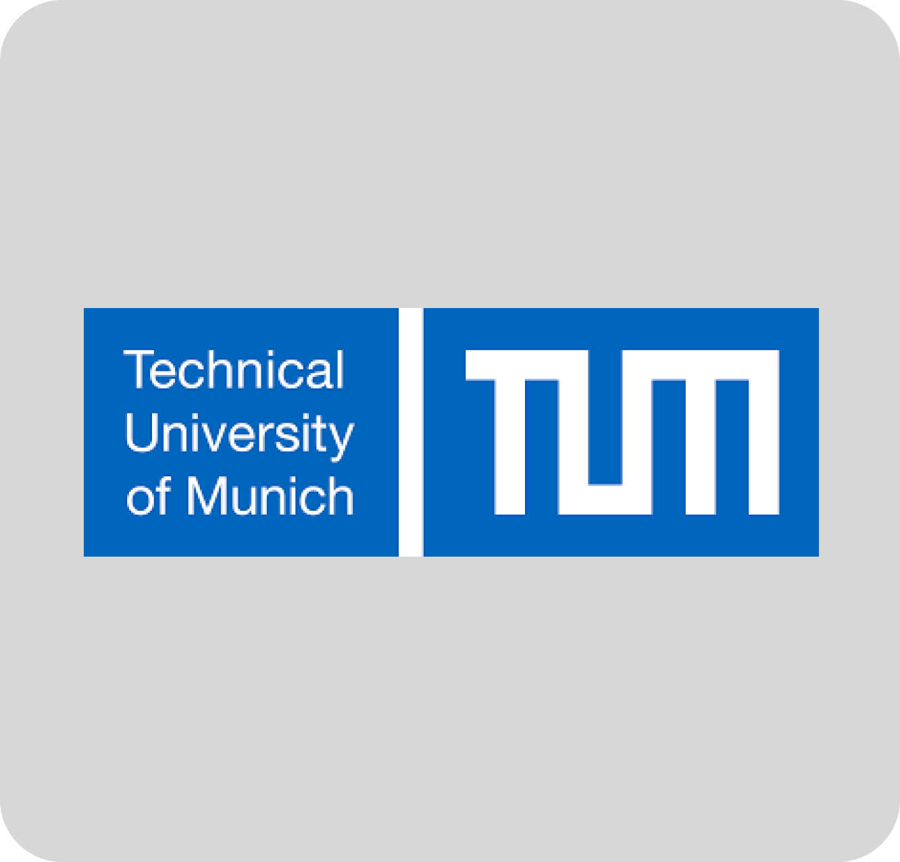
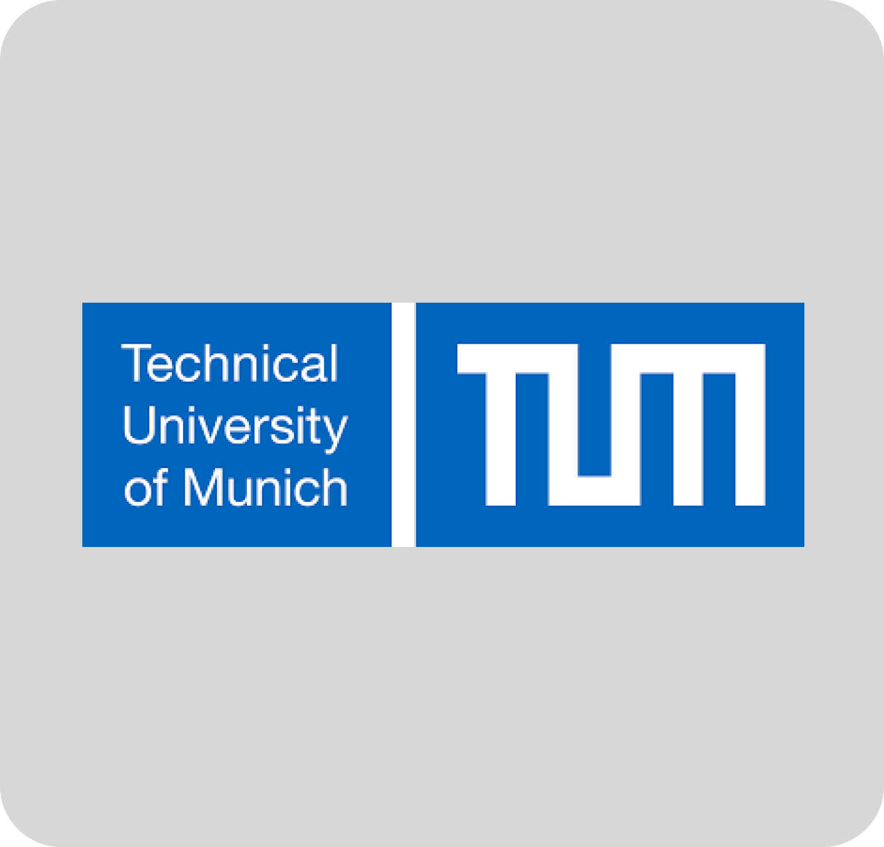
 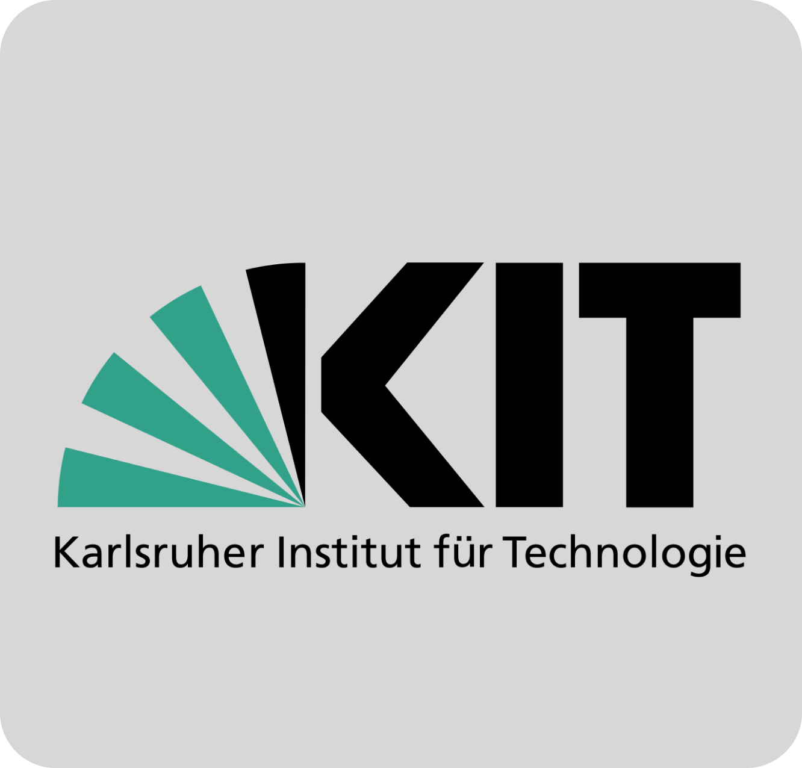
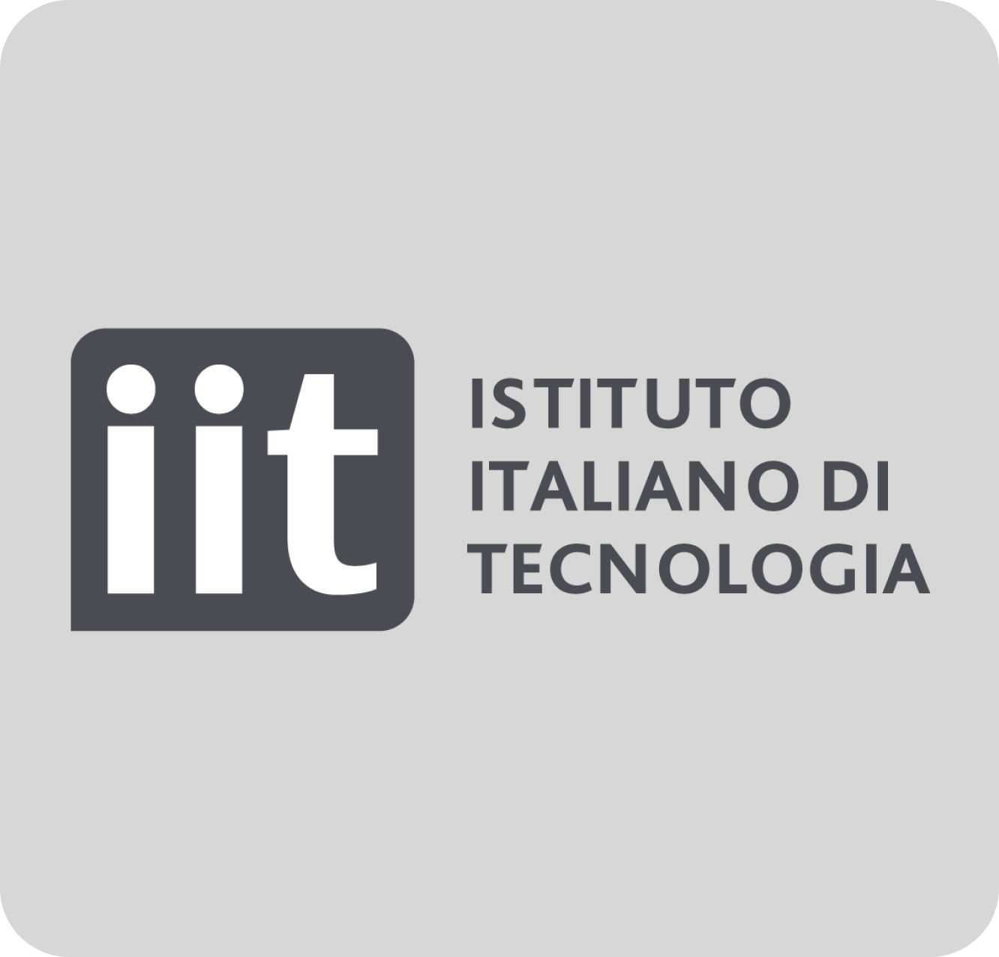
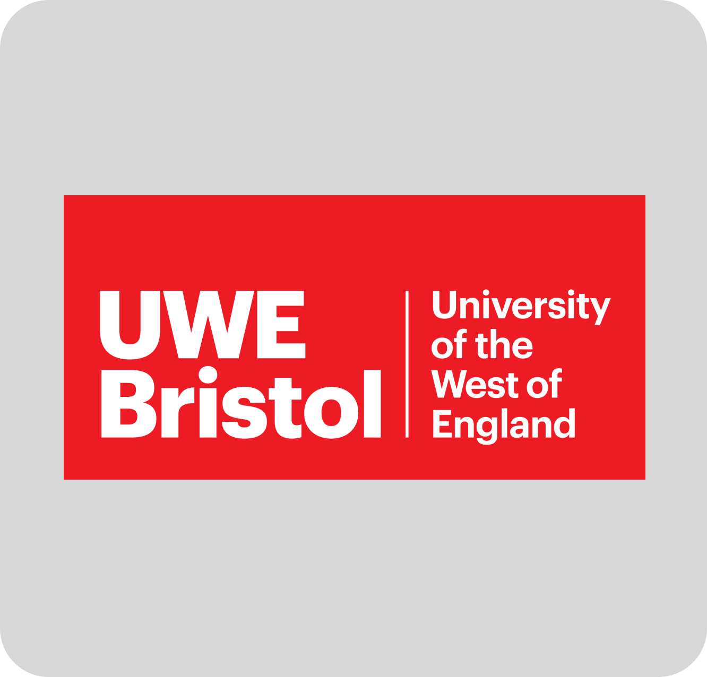
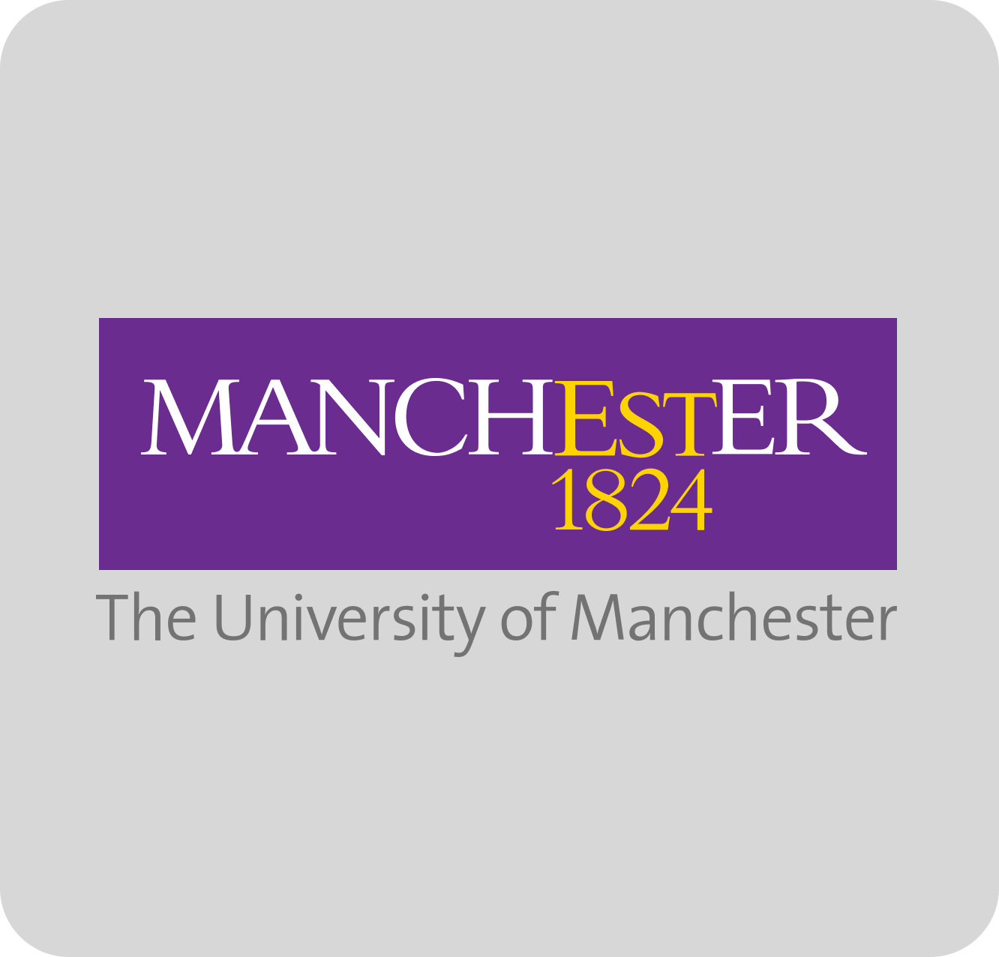
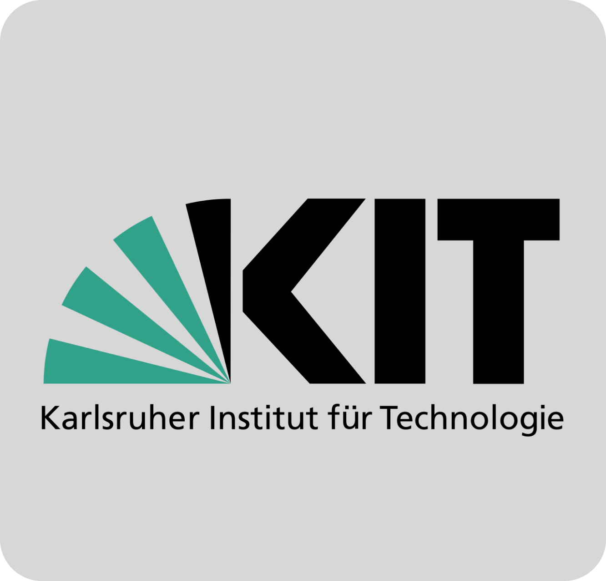
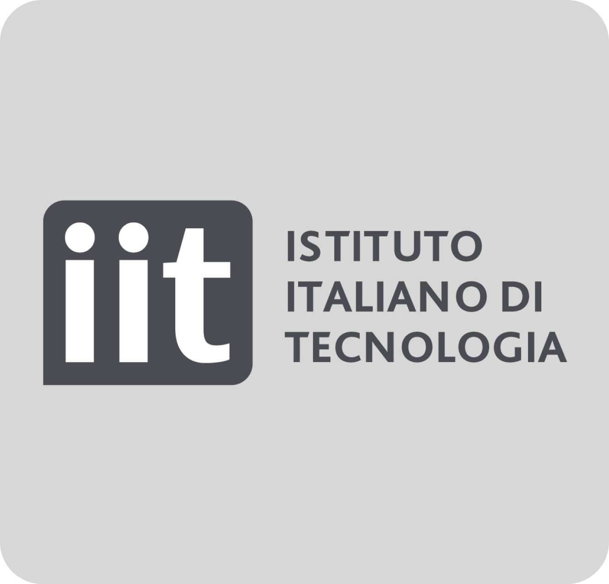
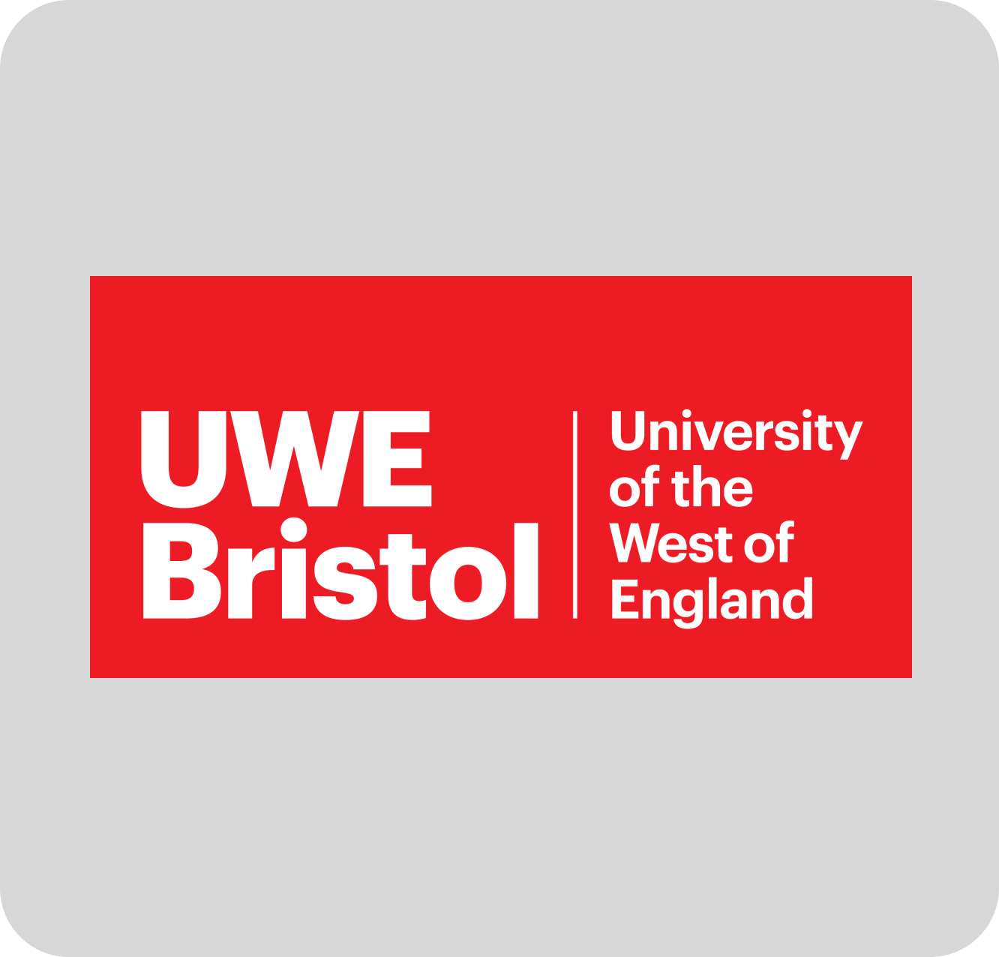
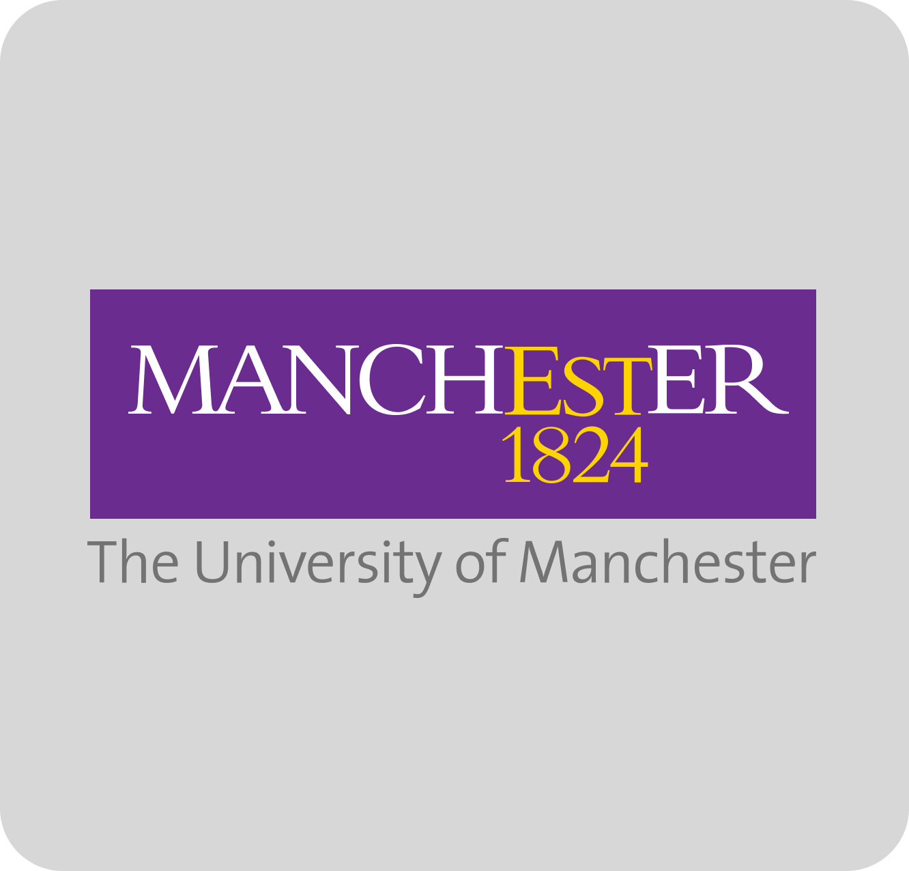